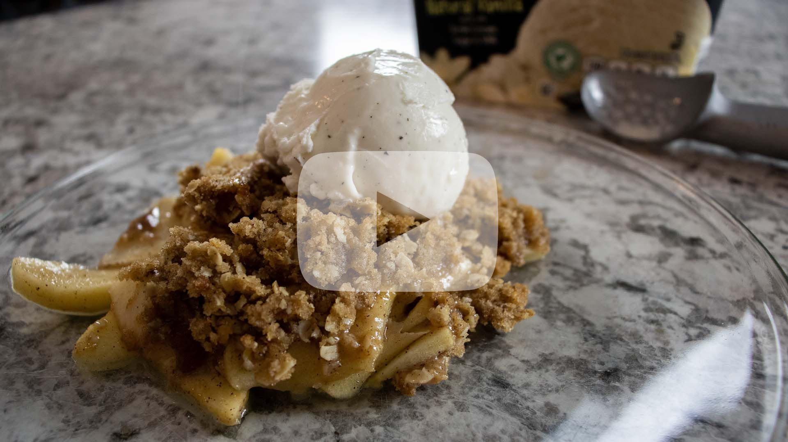

Apple Crisp
Apple Filling
- - 6 - 8 apples (your preference of apples)
- - 1.5 teaspoons lemon juice
- - 1 tablespoon of flour
- - 2 tablespoons sugar
- - 3/4 teaspoons of cinnamon
Crumble Topping
- - 3/4 cup of old fashioned oats
- - 3/4 cup of all-purpose flour
- - 1 cup of brown sugar
- - 1 stick of butter, cut up
- - 1 teaspoon of cinnamon
Directions:
Apple Filling
- 1. Peel, core, and thinly slice your apples.
- 2. In a glass bowl, add the apples with the lemon juice. Coat the apples in the lemon juice.
- 3. Mix together the flour, sugar, and cinnamon. Sprinkle over the apples and stir to coat the apples in the seasoning.
- 4. Set aside.
Crumble Topping
- 1. Mix together the oats, flour, brown sugar, cinnamon, and butter.
- 2. Using a fork or pastry cutter, cut the butter into the mixture.
- 3. Once fully cut in, set aside.
Apple Crisp
- 1. Preheat your oven to 350 degrees.
- 2. In a baking dish, add the apple filling. Smooth out to have them spread out evenly along the bottom of the dish.
- 3. Sprinkle crumble over top, spread out to have an even layer on the top.
- 4. Bake for 45-50 minutes.
- 5. Serve (with ice cream!) and enjoy